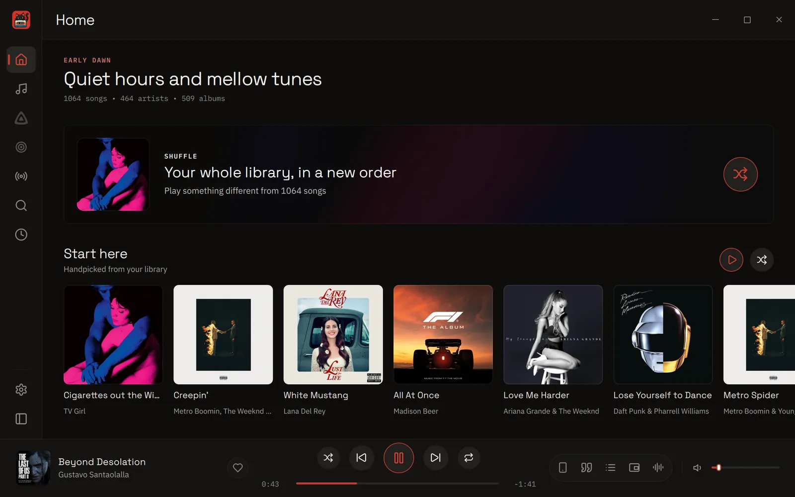
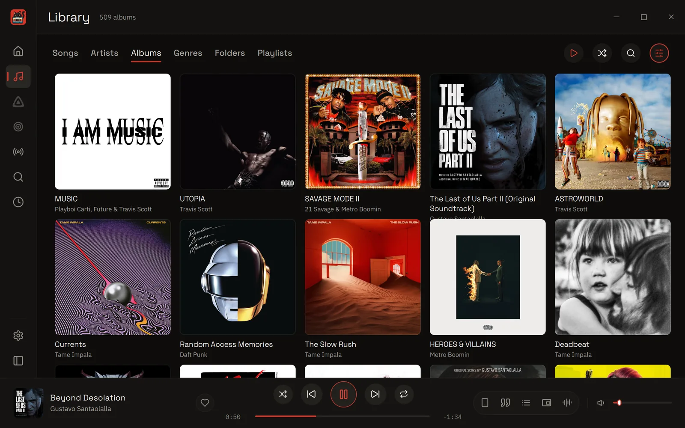
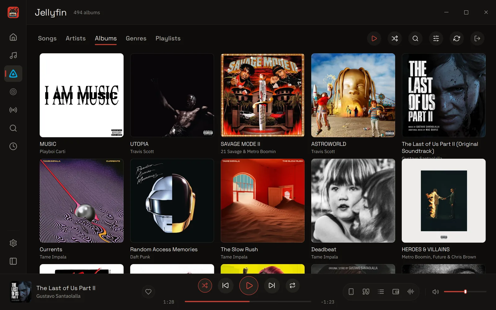
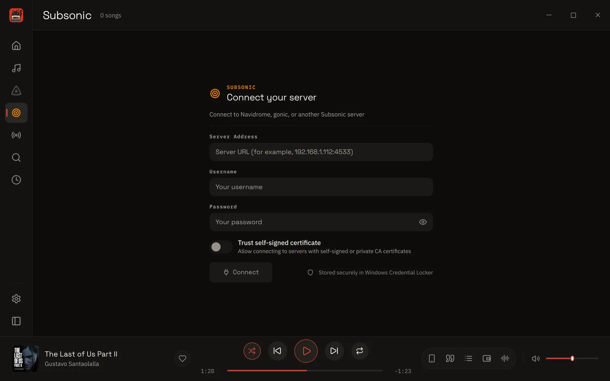
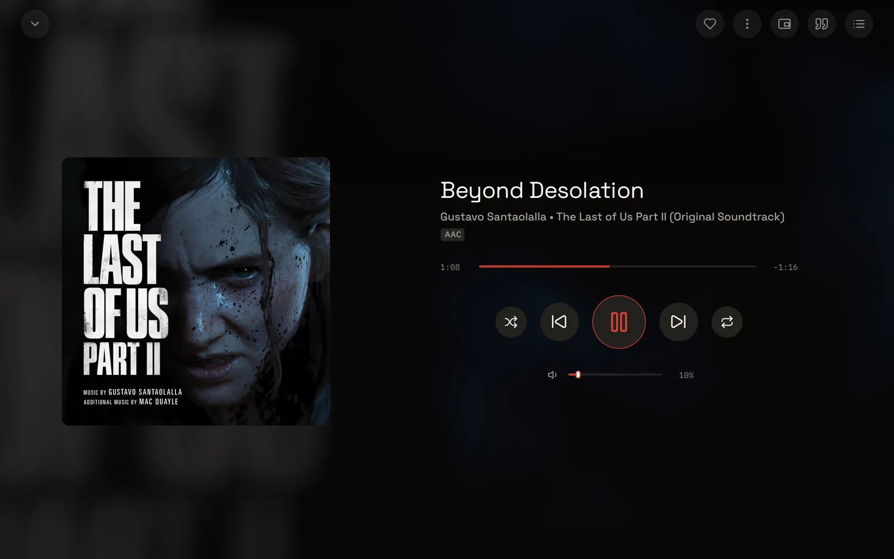
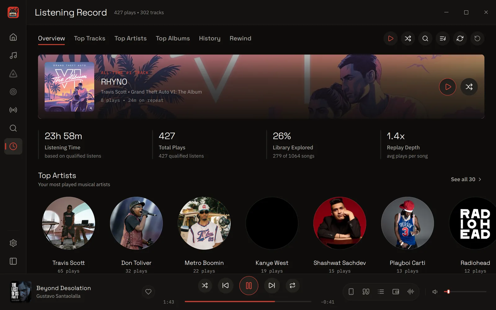
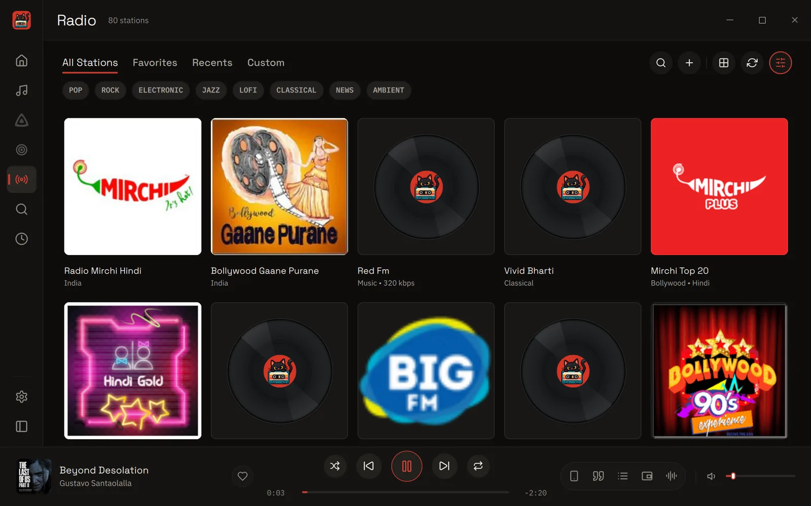

CassetteCat for Desktop
For Windows 10 and 11, and Linux on x86_64 and ARM64. A Mac version is in development. The source code is on GitHub. Every change is reviewed with CodeRabbit.







Everything in the desktop app
Playback
How your music sounds and plays.
- Gapless and crossfadeNo gaps between songs, or a fade of up to 10 seconds.
- Equalizer with AutoEqTen bands, tuned for your headphones.
- ReplayGain and volume limitEven loudness, and a limit that turns everything down.
- Sleep timerStops after a set time, with a gentle fade.
- Queue and AutoplaySurvives restarts, then plays similar songs.
- Audio detailsFormat, sample rate, bit depth and bitrate.
- Output devicePick which speakers or headphones to use.
- Synced lyricsLit word by word, from .lrc files, tags or LRCLIB. Time plain lyrics yourself.
Library
Your own files, sorted and searchable.
- Local musicYour folders, with new files picked up as you add them.
- Tag editorFix tags and covers on many songs at once.
- CoversFind better covers from online catalogues.
- PlaylistsYour own and smart playlists, with M3U import.
- SearchSongs, artists, albums, or a line from the lyrics, with Ctrl+K.
- Library healthFinds missing tags, duplicates and missing art.
Streaming and radio
Your server, and stations from around the world.
- JellyfinYour Jellyfin library, with Quick Connect.
- Navidrome and SubsonicNavidrome, Gonic, Airsonic and more.
- Internet radioRadio Browser stations, plus your own streams.
Listening Record
What you play, kept on your device.
- Your statsTop songs, artists and albums, and your full history.
- RewindMonthly and yearly summaries.
- ScrobblingLast.fm, ListenBrainz and Libre.fm.
- Discord statusShow what you're playing on Discord.
On your desktop
Made for a keyboard and a big screen.
- Mini playerA small floating player, kept on top if you like.
- System controlsMedia keys and each system's own media controls.
- Keyboard shortcutsFor everything, all changeable, some working from any app.
- System trayKeeps playing in the tray, with song change notifications.
- Windows installerOpen with entries and start at sign-in, if you want them.
Yours
Your look, your backups, your privacy.
- Your phonePair the Android app as a remote, and share one Listening Record.
- BackupsSettings, favourites and saved queues in one file.
- PrivateNo account or tracking, and Offline Blackout Mode.